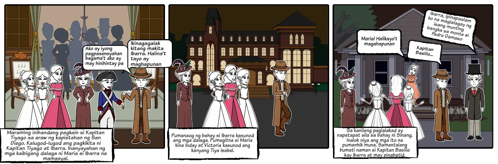

<html>
    <head>
        <Title>NOLI ME TANGERE: KABANATA 27</Title>
        <link rel="stylesheet" href="grid.css">
    </head>
</html>

<style>
    body {
        background-color: #b8936b;;
    }

    h2{
        background-color:#d7bfae;
    }

    p {
        background-color:#d3bfa6;
    }
</style>

<body>
    <h1>Kabanata 27: Pagtatakipsilim</h1>
</body>

<div class = "container">
    <div class = "box">
        <h2>BUOD</h2>

        

     <p>Isa sa mga may malalaking handaan sa pista ay ang kay Kapitan Tiago.
     Sinadya niya iyon dahil nagpapasikat ito kay Ibarra na kaniyang mamanugangin
     sapagkat tanyag ang binata sa Maynila at nailalathala pa sa mga pahayagan.
     Iba’t iba ang mga handa at produktong dumarating sa bahay ng Kapitan bago ang bisperas ng pista.
     Nang makarating sa tahanan at makita ang anak, binigyan niya si Maria ng isang agnos na mayroong diyamante at
     Esmeralda bilang pasalubong. Pinag-usapan sa buong bayan ang ginagawang pagpapatayo ni Crisostomo ng paaralan. May
     nailathala pang artikulo kaugnay nito na may pamagat na, “Tularan Natin Siya”. Bilang pagtulad sa
     ginawa ng binata, binabalak ni Kapitan Tiago na magpagawa ng isang kumbento na sarili niyang
     gugol.
     </p>
        
     <p>Nagpaalam si Maria Clara na siya ay mamamasyal kasama ni Crisostomo at mga kaibigang dalaga.
     Pinagbilinan ni Kapitan Tiago ang anak na umuwi nang maaga sapagkat sasalo si Padre Damaso sa
     kanilang hapunan. Inimbitahan din ng ama ng dalaga si Crisostomo upang makisalo sa hapunan nang
     sa gayon ay magkausap din sila ng dating kura ngunit nagdahilan ang binata na kailangan siya sa
     kanilang bahay sapagkat baka may dumating ding panauhin. Sumama rin sa pamamasyal si Tiya
     Isabel at si Sinang na kanila pang dinaanan at ipinagpaalam kay Kapitan Basilio.
     Habang namamasyal, nakita nila sa isang sulok ng plaza ang isang bulag na ketongin. Umaawit ito
     kaya nakuha nito ang atensiyon ni Maria Clara. Dahil sa pagkahabag ng dalaga, ibingay nito bilang
     limos ang kaniyang kuwintas na may agnos. Naluha si Maria Clara sa habag sa kaniyang nakita.
     Biglang lumapit ang baliw na si Sisa sa ketongin at hinawakan ito.
     Ipinangako naman ni Crisostomo sa kasintahan na tutulungan si Sisa. Katulad ng nauna ipinahayag
     ng binata kay Kapitan Tiago, hindi na ito nagpaunlak na pumasok sa tahanan ng dalaga upang
     maghapunan na ikinalumbay ni Maria Clara.</p> 
        
    </div>
    <div class ="box">
        <h2> REPLEKSYON</h2>

     <p>Huwag kang pipili ng taong iyong tutulungan. Lahat ng taong nangangailangan ng tulong
     ay ating tulungan kung ano ang ating makakaya. Huwag mong titingnan ang katayuan nito,
     huwag mong pandirihan, at huwag husgahan. Huwag kang maghihintay ng kapalit.
     Tumulong ka sa paraan na iyong makakaya. Malaki man yan o maliit, ang mahalaga 
     ay may natulungan at napasaya ka na tao sapagkat sila ay tao rin na katulad natin, ay kailangan ng kalinga at atensyon. 
     Tularan natin si Maria Clara na nang makita niya ang ketongin ay hindi siya nagdalawang
     isip na lapitan at tulungan.</p>
        
     <p>Umiwas sa mga posibleng kaguluhan. Kung alam mong ang taong iyong makakahalubilo 
     ay maaring mapagmumulan ng away ay marapat lamang na ikaw ay umiwas na at lumayo.
     Tulad na lamang ng ginawa ni Crisostomo Ibarrra nang kita niya na naroon sa hapunan si Padre Damaso at
     inanyayahan din siya ni Kapitan Tiyago na maki umpok doon ay tumanggi siya at nagdahilan
     na mayroon paring pupuntahan, upang makaiwas sa gulo. </p>

    </div>
    <div class ="box">
        <h2>PAGLALARAWAN NG ISANG KARAKTER</h2>
    
        

        <p><center>Kapitan Tiago</center></p>

     <p>Si Kapitan Tiago ay ang pinakamayaman sa Binondo. Nagmula ang kanyang yaman
     sa kaniyang mga lupain lalo na sa San Diego. Siya ay anak ng mariwasang pamilyang nagmamay-ari ng tubuhan sa Malabon.
     Masunurin siya sa mga may kapangyarihan at sakim pagdating sa usapang salapi. Dahil sa sya ay mayaman, siya ay isang 
     impluwensyadong tao. Siya ay malakas sa mga taong nasa gobyerno at halos kaibigan nya lahat ng mga prayle. 
     Ang turing niya sa sarili ay isang tunay na Kastila at hindi Pilipino.  
     Kasundo niya ang Diyos dahil nagagawa niyang bilhin ang kabalanan. 
     Katunayan, siya ay nagpapamisa at nag papadasal tungkol sa kanyang sarili.  
     Ipinalalagay ng balana na siya ay nakapagtatamo ng kalangitan.</p>
       
     <p>Para kay Kapitan Tiyago kahit na ano ang itakda an mga Kastila, yaon ay karapat-dapat at kapuri-puri.
     Dahil sa kanyang pagpupula sa mga Pilipino, siya ay naglilingkod bilang gobernadorcillo.
     Basta opisyal, sinusunod nya. Anumang reglamento o patakaran ay kanyang sinusonod. 
     Sipsip din sya sa mga taong nasa poder.
     Basta may okasyon na katulad ng kapanganakan at kapistahan, lagi sya mayroong handog na regalo.</p>

    </div>
</div>